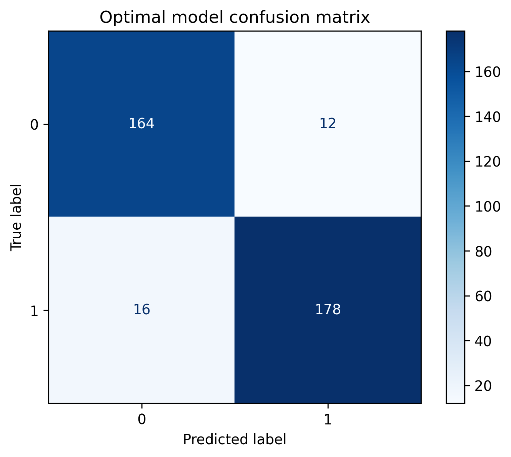

The objective of the support vector machine algorithm is to find a hyperplane in an N-dimensional space(N — the number of features)
that distinctly classifies the data points. To explain the concept in an easy to understand manner, the following is a definition and example from
Monkeylearn.com
Let’s imagine we have two tags: red and blue, and our data has two features: x and y. We want a classifier that, given a pair of (x,y) coordinates,
outputs if it’s either red or blue. We plot our already labeled training data on a plane:
A support vector machine takes these data points and outputs the hyperplane (which in two dimensions it’s simply a line) that best separates the tags.
This line is the decision boundary: anything that falls to one side of it we will classify as blue, and anything that falls to the other as red. (Seen in
example below)
This is a very simple explanation of the algorithm but the logic is the same when applied on larger datasets with more than 1 variable that might also
have non linear relationships between features. To accommodate with these non linear relationships, SVM has several "kernels" that could be used. A great resource
to properly understand what are these kernels and how do they work from a mathematical perspective is
the following link.
SVM’s purpose in this project is similar to decision trees’ purpose, predicting whether or not a song would a user’s playlist (mine in this case). However, the difference
between both models is in the input variables where I previously used audio features for the decision tree and random forest models whereas in this case, I used text data
and the form of song lyrics to predict whether a song would make it to the playlist (i.e be recommended) or not. Essentially, the goal of this problem was to understand whether
lyrics of songs have any predictive ability when it comes to predicting whether a user would like a certain song.
Similar to what was done in the Decision Tree section, additional playlists were gathered and joined with my playlist to have a final data set with a good mix of 1s and 0s,
which represent in playlist and not in playlist respectively. Next a Python script was developed to gather the lyrics of all newly added songs since lyrics is the only input
variable the model was to build on. Finally, since the input variable is text data count vectorizer (previously used and defined in the Data Cleaning tab) was used to transform
the data into the appropriate format for modeling.
As discussed in the start of this section where SVM was defined and introduced, most data sets do not have linear relationships between data points which is why fitting a
linear hyperplane would not always be the best-case fit for the problem. For this reason, there are multiple so-called kernels for SVM which are used in these cases where the
most popular are RBF, polynomial, and sigmoid. To properly understand which one best fits my data I fit it all these four models using Python’s sklearn package and compared
their training and testing accuracies which can be seen below:
In terms of accuracy almost all kernels perform better than the baseline model (which has an accuracy of 50%). Specifically, the RBF and linear kernels perform the best in terms
of accuracy (90+% testing accuracy) but the gap between training and testing accuracy is lower for RBF kernel which indicates a lesser tendency to overfit. For this reason,
I decided to choose the RBF kernel as the SVM model I want to optimize and use for classification.
As discussed in the preceding section, the RBF kernel gave the best SVM model for my project, which is why decided to use it as the model to further optimize. Optimizing SVM
models usually means taking multiple kernels along with multiple hyperparameter values and seeing how the accuracies change for each possible combination. For this case I decided
to stick to one kernel (RBF) and try multiple C values between 0.1 and 10. A very good explanation of what the C hyperparameter is and does for the SVM model can be
found in the following link.
The optimization was done using Python's GridSearch package, which fits the different options and returns the final "best" fit.In my case the best fit turned out to be for a C
value equal to 10, which I later used to rebuild a new model that will act as my final SVM model.
Running the final SVM model gave the best accuracy so far of 92% which does make sense considering optimization mainly focuses on improving a pre-built model.
The final model’s confusion matrix can be seen below:

The confusion matrix shows that for the most part the model perfectly predicts the true positives and true negatives for this problem.
All in all, SVM classification using text and lyrics data of songs proved to be a good method to predict whether a song would make a certain a user's playlist, which shows the predictive ability that lyrics of songs have. From a social perspective this indicates that most people’s music tastes could be easily differentiated by the lyrics of songs they listen to. Whether or not SVM is superior to decision trees (which was used previously) for this project is yet to be seen and could be properly understood once both of them are used in a production environment